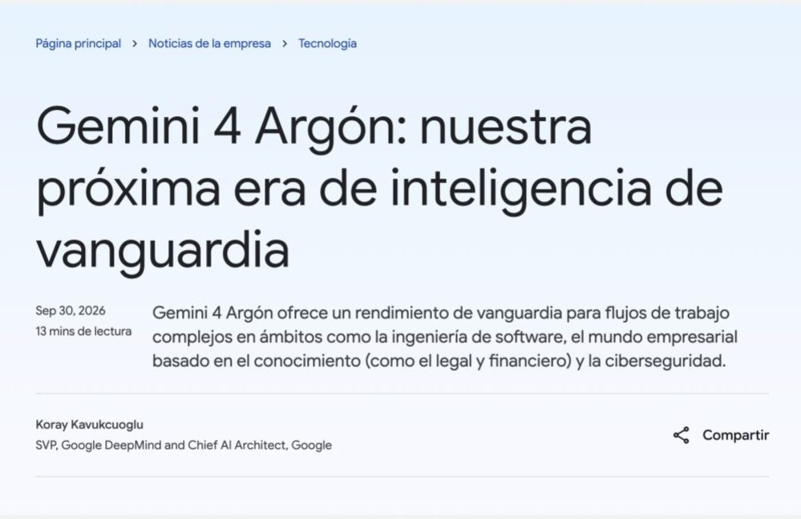
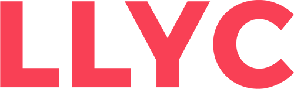
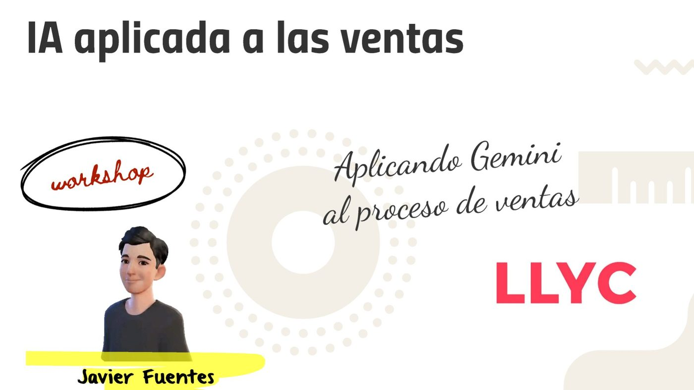
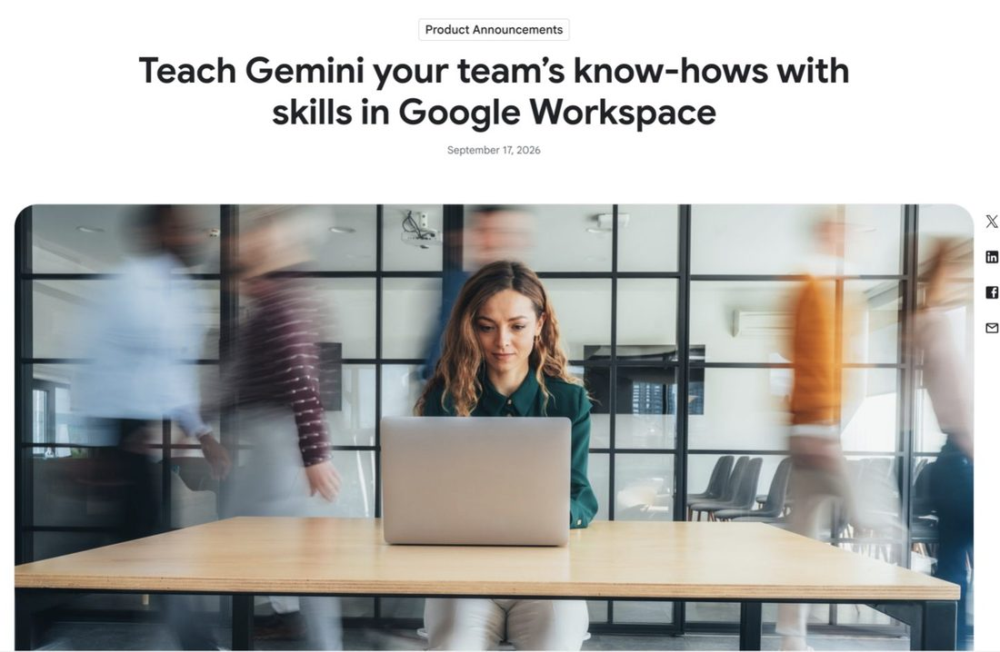
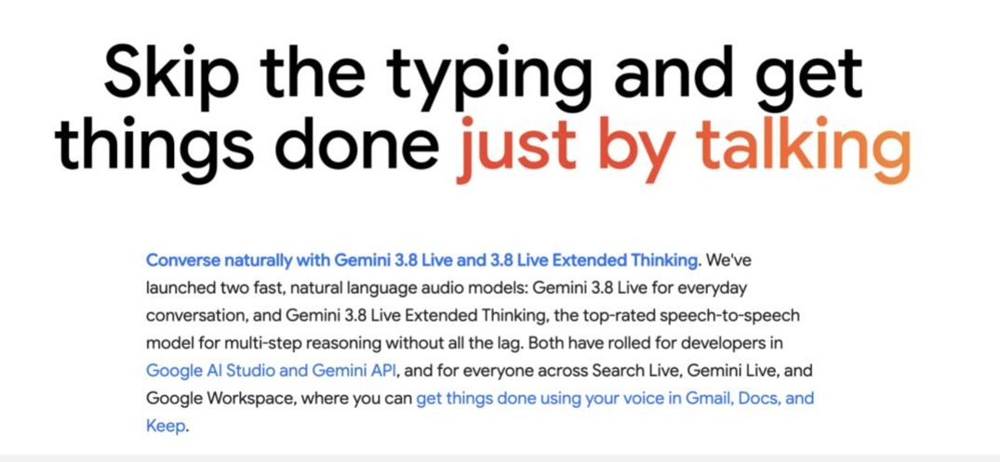
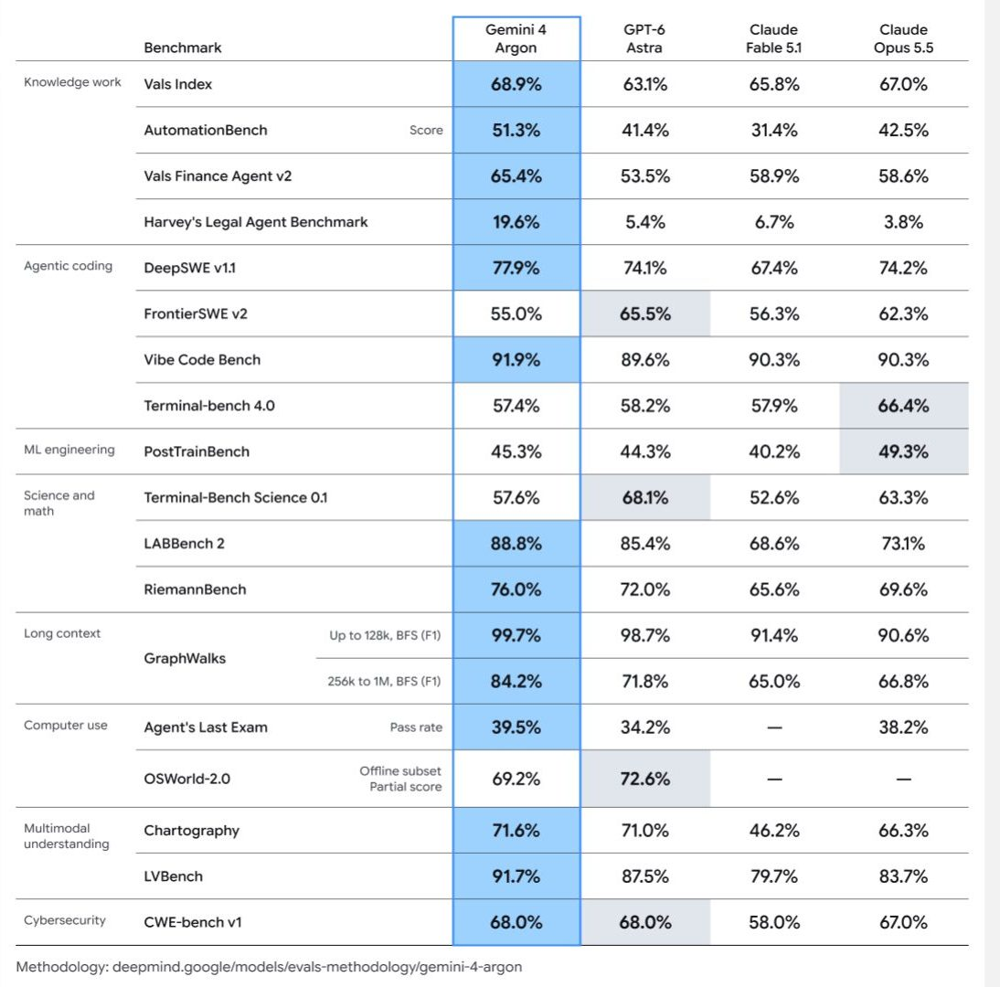
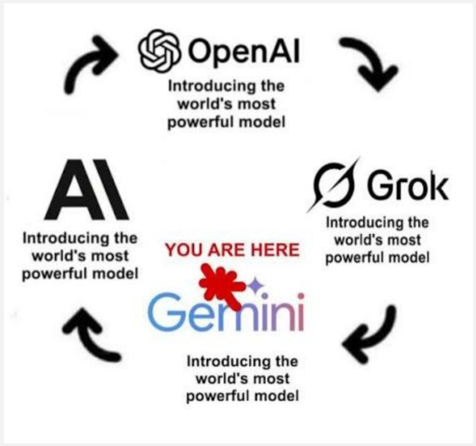
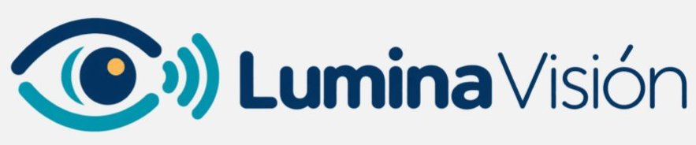
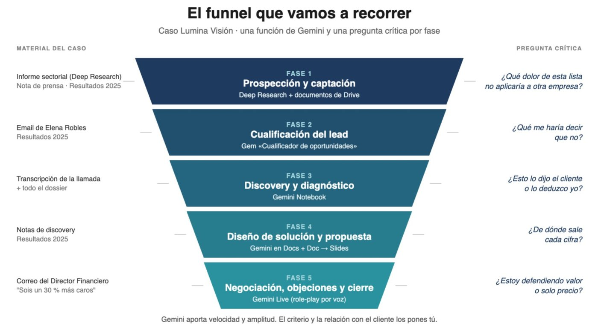

30 sep 2026
Gemini 4 Argón
Google presenta su nuevo modelo de vanguardia, orientado a flujos de trabajo complejos: ingeniería de software, trabajo del conocimiento (legal, financiero) y ciberseguridad.

Workshop · IA aplicada a las ventas
Lo que vimos en la sesión: novedades de la IA, lo básico de Gemini y un caso comercial completo —Lumina Visión— recorrido de la prospección al cierre, con todos los prompts listos para copiar.

Empezamos con las últimas noticias sobre Gemini y sus competidores. El mensaje: cada pocas semanas alguien presenta «el modelo más potente del mundo», y lo que importa es qué tareas de verdad puede hacer ya por nosotros.

Google presenta su nuevo modelo de vanguardia, orientado a flujos de trabajo complejos: ingeniería de software, trabajo del conocimiento (legal, financiero) y ciberseguridad.

Gemini puede aprender el «saber hacer» de cada equipo: procesos y formas de trabajar que se reutilizan dentro de Workspace.

Dos modelos de audio para conversar con naturalidad (Live y Live Extended Thinking), disponibles en Gemini Live, Search Live y Workspace: Gmail, Docs y Keep por voz.


Un recorrido por la interfaz de gemini.google.com con cuenta de trabajo, y las funciones que usamos después en el caso.
Además de la app de Gemini, Google tiene ya el AI Mode en el propio buscador («Ask Google»). Para una consulta rápida con fuentes web, cualquiera de los dos sirve.
En la app de Gemini, el chat normal busca en Google por su cuenta cuando la pregunta lo requiere: no hace falta activar nada.
Un caso ficticio pero realista para recorrer un ciclo comercial completo de una consultora de comunicación con Gemini. Empresa, personas y cifras son inventadas.

Cadena de óptica, contactología y audiología con nueva CEO desde julio y un gran proyecto para 2027: abrir audiología en 150 tiendas (piloto en 20 en el primer semestre). Pero la reputación está tocada: esperas de 40 minutos en graduación, problemas con las garantías, una reclamación colectiva en Valencia y una red de franquiciados que siente que el marketing nacional no le lleva clientes.
«El problema no es la marca, es que la tienda no cumple lo que promete la publicidad.» — Elena Robles

Caso Lumina Visión
Cada bloque oscuro tiene un botón Copiar. Los materiales del caso para subir a Gemini están en Materiales.
Chat con búsqueda + Deep Research + documentos de Drive
Busca en la web noticias de los últimos 12 meses sobre el sector de ópticas y audiología en España. Dame: 1. Los 5 titulares más relevantes, con fecha, medio y enlace. 2. Para cada uno, una línea sobre por qué le importa a una consultora de comunicación que quiere trabajar con una cadena de ópticas. 3. Una tendencia que se repita en varias noticias. Si no encuentras fecha o fuente de algo, dilo.
Dónde: app de Gemini, chat normal. Gemini busca en Google por su cuenta cuando la pregunta lo necesita.
Actúa como analista de desarrollo de negocio de una consultora de comunicación, marketing y asuntos públicos. Investiga el sector de ópticas y audiología en España y Portugal en los últimos 18 meses. Quiero un informe con: 1. Tendencias de mercado: canal online de lentes de contacto, cadenas low-cost, envejecimiento de la población y crecimiento de la audiología. 2. Regulación sanitaria y de publicidad que afecte a la comunicación del sector, en especial la publicidad de audífonos y productos sanitarios. 3. Temas de reputación recurrentes: reclamaciones, garantías, reseñas, noticias negativas y acciones de asociaciones de consumidores. 4. Movimientos recientes de las principales cadenas: aperturas, cambios de dirección, lanzamientos y campañas. 5. Retos de comunicación en redes con franquiciados. Para cada punto, cita la fuente con fecha. Separa datos verificados de estimaciones. Al final, incluye una sección "Lo que no he podido confirmar".
Dónde: botón + → Deep research. Gemini te enseña el plan de investigación antes de empezar: revísalo y ajústalo si hace falta.
Gem «Cualificador de oportunidades»
Cómo crear la Gem: gemini.google.com → Explorar Gems → Nueva Gem → nombre «Cualificador de oportunidades» → pega el texto en Instrucciones → Guardar. Después, abre la Gem y pégale el correo de Elena (o súbelo junto a los resultados 2025).
ROL Eres un asistente de cualificación comercial para una consultora de comunicación, marketing y asuntos públicos. Ayudas a decidir si una oportunidad merece inversión de tiempo. Tu prioridad es el rigor, no el optimismo. ENTRADA Recibirás información sobre una oportunidad: un correo, notas de una llamada o datos de la empresa. Puede venir incompleta. CRITERIOS DE EVALUACIÓN Evalúa cada criterio como Alto / Medio / Bajo / Sin datos, con una frase de justificación basada solo en la información recibida: 1. Necesidad: ¿hay un problema concreto y reconocido por el cliente? 2. Encaje: ¿el problema encaja con los servicios de una consultora de comunicación, marketing y asuntos públicos? 3. Decisor: ¿sabemos quién decide y participa en la conversación? 4. Presupuesto: ¿hay presupuesto asignado o un proceso para asignarlo? 5. Urgencia: ¿hay una fecha o un evento que obligue a actuar? 6. Riesgo: ¿hay riesgos reputacionales, de conflicto de interés o de relación con otros proveedores? FORMATO DE RESPUESTA 1. Tabla con los 6 criterios: valoración y justificación. 2. Red flags: máximo 5, ordenadas por gravedad. 3. Preguntas de validación: 5 preguntas abiertas para la próxima conversación, una por cada criterio con valoración Baja o Sin datos. 4. Recomendación: Perseguir / Perseguir con condiciones / No perseguir. Indica tu nivel de confianza (alto, medio o bajo) y qué dato la cambiaría. REGLAS - No inventes datos. Si falta información, escribe "Sin datos". - No uses puntuaciones numéricas. - Si la información es insuficiente para recomendar, dilo. - Señala siempre al menos una razón para no perseguir la oportunidad. - Recuerda al final: "La decisión es tuya. Revisa conflictos de interés con las herramientas internas de tu organización." - Responde en el idioma de la entrada.
Por qué funciona: rol claro, entrada definida, criterios cerrados, formato fijo y reglas que obligan a decir «Sin datos» y a buscar razones para no perseguir. Es la estructura de un buen system prompt, reutilizable para cualquier oportunidad.
Gemini Notebook
Subimos la transcripción de la llamada y el resto del dossier a un cuaderno. Gemini responde solo con tus fuentes y cita de dónde sale cada cosa.
¿Esto lo dijo el cliente o lo deduzco yo?
Gemini en Docs + del Doc a Slides
Borrador de la propuesta en Google Docs mencionando los archivos de Drive con @, versiones para la CEO y para el director financiero, y paso a Slides.
¿De dónde sale cada cifra?
Gem «Comprador exigente» + Gemini Live (role-play por voz)
Andrés Vidal responde a la propuesta: 182.000 € frente a otra de 140.000 € con alcance parecido. Pide acercarse a esa cifra, dejar fuera la fase de audiología y pagar a 90 días, y quiere cerrarlo antes del comité del 20 de octubre. Creamos una Gem que hace de Andrés y ensayamos la negociación hablando con ella en Gemini Live.
Eres Andrés Vidal, director financiero de Lumina Visión, una cadena de ópticas. Has recibido una propuesta de comunicación de 182.000 € y tienes otra de 140.000 € con un alcance parecido. Venís de un año flojo y tienes un objetivo de ahorro del 4 % en costes no productivos. Tu papel: negociar de forma exigente y realista. No cedas fácilmente. Plantea objeciones de precio, de plazos y de resultados. Pide quitar la fase de audiología y pagar a 90 días. Responde en 2 a 4 frases, como en una conversación real. Cuando el usuario escriba "FIN", sal del personaje y evalúa su negociación: qué concedió, qué argumento de valor no usó y tres respuestas alternativas.
Para practicar
Los documentos que usamos en la sesión. Súbelos a Gemini o guárdalos en tu Drive para poder mencionarlos con @. Todo es ficticio.